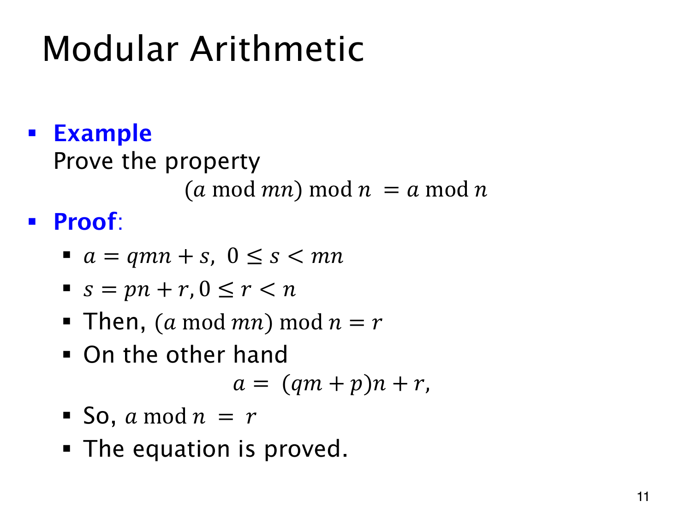

L1.12 · 第 11 页讲解原文
查看这一页课件

连续取模时的倍数条件
先模 mn，再模 n，得到的余数与直接模 n 相同：
(amodmn)modn=amodn,a∈Z, m,n∈Z+.
这里第一层模数 mn 是第二层模数 n 的倍数。例如 29mod12=5，5mod4=1；直接算 29mod4 也是 1。
证明时将两次除法接起来。先写
a=qmn+s,0≤s<mn,
再写 s=pn+r，其中 0≤r<n。等式左边两次取模的结果就是 r。代入原式可得
a=qmn+pn+r=(qm+p)n+r.
qm+p 是整数，余数 r 也合法，因此 amodn=r，两边相等。
去掉模数之间的倍数条件，结论便不能照用。(8mod5)mod3=0，但 8mod3=2，就是一个反例。